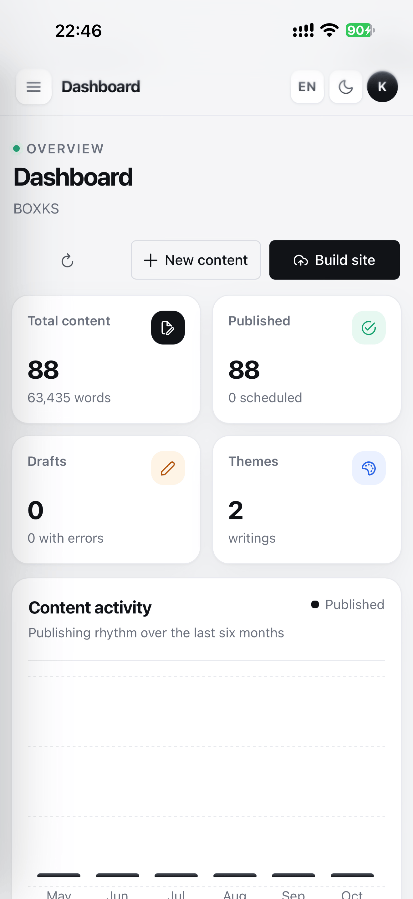
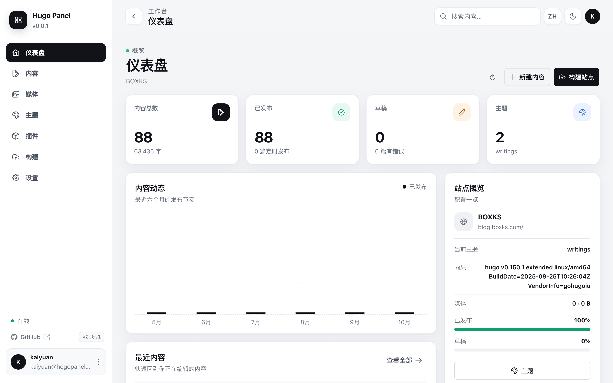

内容管理
Markdown 页面与文章的新建、重命名、搜索、筛选和分页；front matter 支持 YAML / TOML / JSON，右侧实时预览。
自托管 · Go + SQLite · 无需 Node.js
内容、主题、插件、媒体和构建，都在同一个界面里完成。 一个二进制文件，一个 SQLite 文件，不需要手写配置文件，也不需要打开终端。

界面
内容总量、发布节奏、主题状态和最近编辑，打开后台的第一眼就能读到。

桌面端仪表盘 · 亮色主题
功能
面向日常写作与运维，而不是配置文件的速查表。
Markdown 页面与文章的新建、重命名、搜索、筛选和分页；front matter 支持 YAML / TOML / JSON，右侧实时预览。
列出 themes/ 下的主题并一键启用，也可以从 Git 安装、更新或移除；站点参数和菜单可视化编辑。
以 Hugo Modules 安装、移除插件，执行 hugo mod tidy，命令输出和工具链状态直接回显。
上传、预览、删除图片，一键复制 URL 或 Markdown 链接。支持 JPG、PNG、GIF、WebP、AVIF、ICO，单文件 20 MB。
在面板里运行 hugo --gc --minify --cleanDestinationDir，保留最后一次结果，失败时可以邮件通知。
内置简体中文、繁体中文、英语、法语、意大利语、西班牙语、日语、韩语。每种语言独立文件，按需加载，也能上传自己的译文。
默认跟随系统。暗色主题使用纯黑 #000 背景，OLED 屏幕下像素不发光，也更省电。
HttpOnly 会话、CSRF 防护、登录与找回密码限流、同源校验、CSP 和路径穿越防护；配置修改前自动备份。
部署
镜像同时提供 linux/amd64 与 linux/arm64。首次打开会进入创建管理员的向导。
docker run -d \
--name hugo-panel \
--restart unless-stopped \
-p 8080:8080 \
-v /srv/hugo-panel/data:/app/hugo-panel/data \
-v /srv/my-hugo-site:/app/hugo \
-e PUBLIC_URL=https://panel.example.com \
-e TZ=Asia/Shanghai \
kaiyuan/hugo-panel:latestservices:
hugo-panel:
image: kaiyuan/hugo-panel:latest
restart: unless-stopped
ports:
- "8080:8080"
environment:
PUBLIC_URL: https://panel.example.com
volumes:
- ./data:/app/hugo-panel/data
- ./hugo:/app/hugo/app/hugo-panel/data 放 SQLite 数据库、备份和自定义翻译；/app/hugo 是你的 Hugo 站点目录。
除 localhost 外，安装 PWA 和 Service Worker 都要求 HTTPS，建议放在反向代理之后并设置 PUBLIC_URL。
默认以 UID/GID 1000 运行，启动时会把挂载目录 chown 给该用户；由外部工具管理权限时可关闭。
源码、文档和问题反馈都在 GitHub。项目以 MIT 许可证开源。